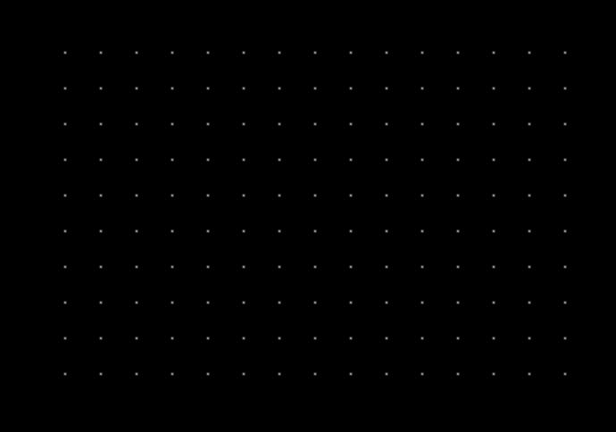
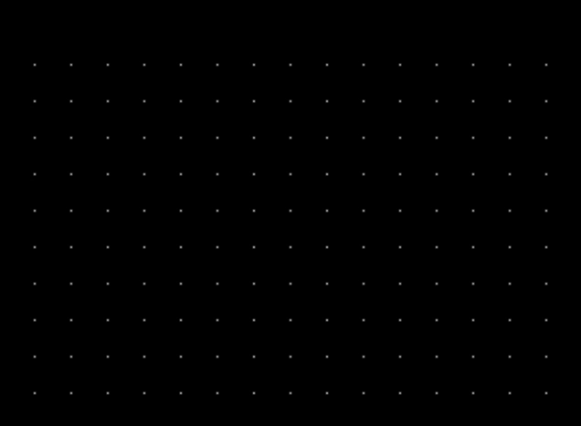
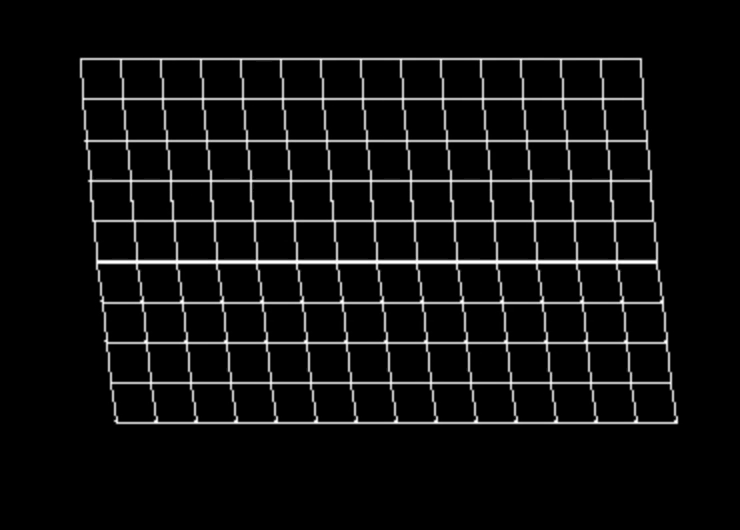
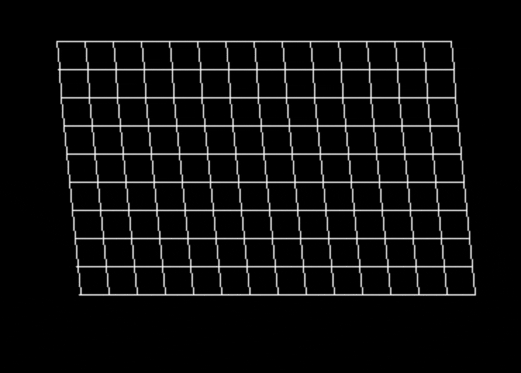
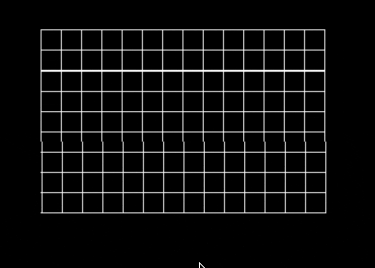

Cloth Simulation in C
Progress: Done!
I've always seen videos of cloth simulations and wondered how they were made and optimized. So, I used some resources and wrote my own over this past weekend which suprisngly was a lot simpler than I expected it to be. I chose to use SDL2 for the graphics library and C for the langauge.
I had seen video's prior behind the process of building the sim and knew that the first step was drawing a grid of points to the screen(After setting up and SDL window of course). So I created a struct for each point holding each x and y position and populated a 2D array of these particles. After the data structure was handled I could easily change the arrays parameters to customize the size of grid.
15x10 grid
With the grid of particles set up we now need to have them react to gravity and after some surfing the web I found that Verlet Integration is a great way to integrate motion and trajectory of particles. With this equation I made a function to update the particles position within the main loop for a final result of the particles falling into the abyss. (I made the gravity variable low for demonstration because it would fall before I could capture it :p).
Next we need chains/links between each point to act as a restriction so that the points have a set distance where if they exceed they get pulled back together. Luckily, the wikipedia page for Verlet Integration also discussed constraint calcualtion. I pinned the top row and after the constraints were added and drawn the simulation was basically already working!
Its no fun without the ability to move and alter the cloth so I added the option to delete a particle with left click and applying a drag force with right click.
 Github
Jan 17, 2025